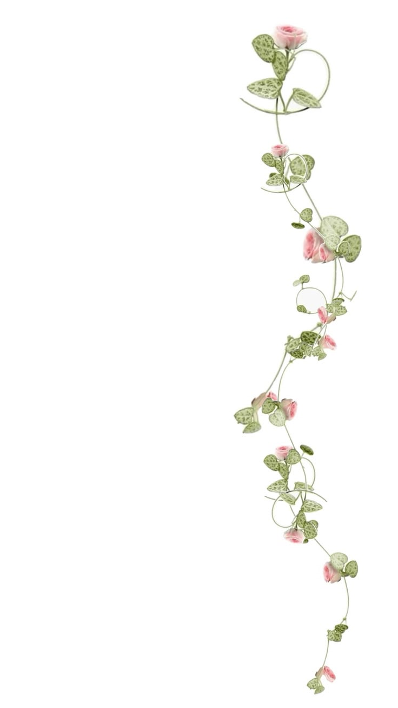
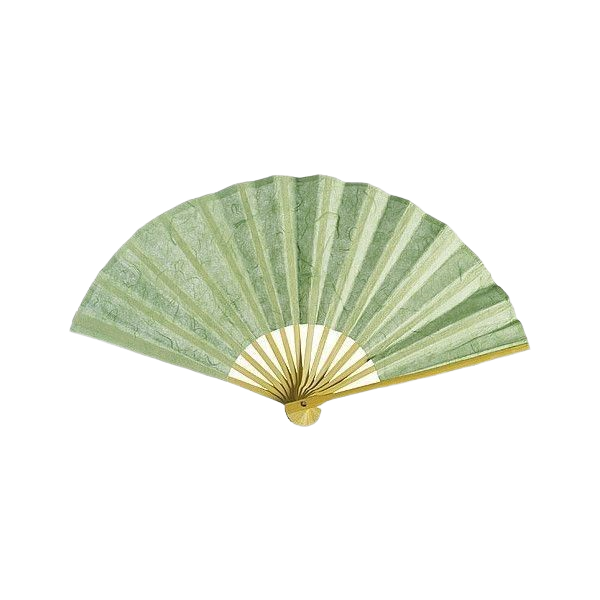
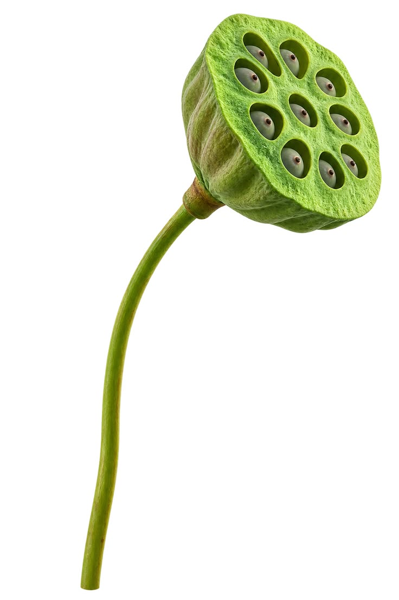
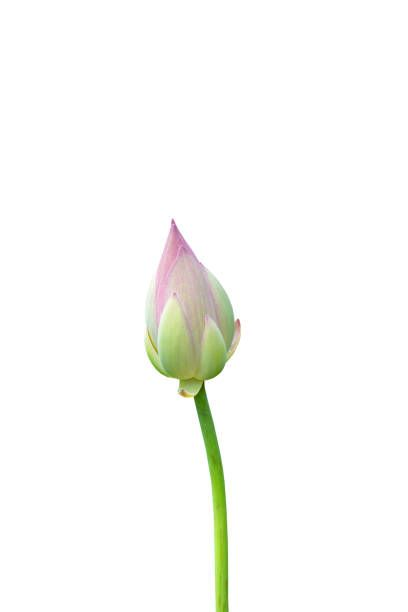
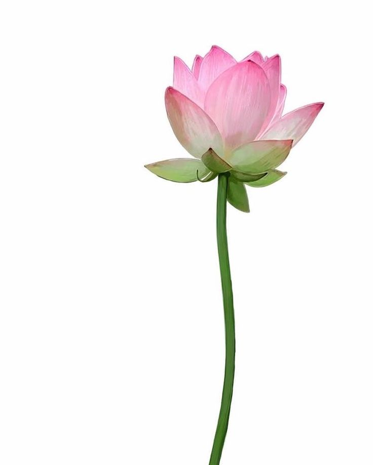
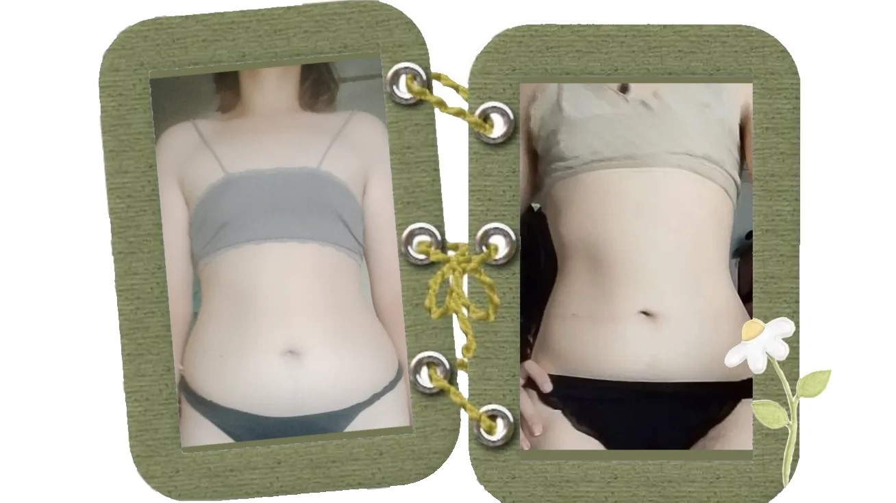
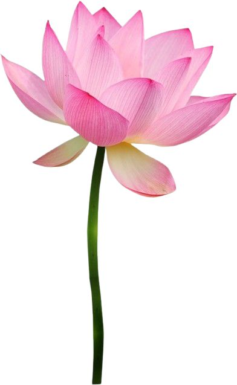

Не знаете, как правильно начать худеть, какие ошибки могут вас подстерегать или что мешает похудеть именно вам?
Тогда предлагаю вам прочитать свою статью и свой опыт похудения. Я расскажу о своих попытках, ошибках, а также способах, которые помогли мне всё-таки добиться своего. Надеюсь, информация, основанная на моём опыте, сможет вам помочь, но предупрежу: стоит обязательно прочитать предпоследнюю часть — «Предосторожности, о которых не стоит забывать», чтобы знать, как делать лучше не стоит.
Приятного чтения!

Всем привет! Меня зовут Вера, мне 19 лет и я очень хотела бы с вами поделиться историей, почему решила похудеть и про сам путь с 75 кг до 60 кг (рост 165 см). Да, возможно цифры не такие маленькие как 40–50 кг, но они честные и комфортные для меня и моего организма. На данный момент меня устраивает такой вес, в нём я чувствую себя прекрасно и не считаю полной (отёчной да, но не полной).
Я большую часть жизни (начиная с первого класса) была больше других за счёт массы тела. В детстве для меня это не было проблемой, ведь детям всё равно на твой рост и вес, хотя бывали такие дети, которые могли обозвать толстой и подобное. Было обидно, но я не держала на них долго зла.
В подростковом возрасте я понимала, что у меня лишний вес, но ничего с этим не делала, хотя было жутко страшно, что кто-то узнает мой настоящий вес. Когда мой вес дошёл до 85 кг в 7 или 8 классе, то я решила просто не ходить на обед и сэкономить на этом деньги. Так я легко похудела на 10 кг. Мне нравилось, что я сделала это без лишних усилий, окружающие замечали это и я гордилась собой, но где-то в глубине души хотелось добиться ещё больше в этом и весить 50 кг и быть худенькой, как остальные девочки в классе. Но мой вес не менялся несколько лет, что меня не сильно беспокоило и тревожило.
Где-то на втором курсе я решила, что хочу похудеть ещё, так как мне не нравился живот, бока и полные руки. Я хотела, чтобы талия была тонкой, красивые подтянутые руки. Мне было неприятно видеть себя в зеркале ниже груди, а про вид сбоку вообще молчу. В общем я не принимала себя такой и не хотела с этим мириться. Так и начался мой ещё один путь похудения. Скажу сразу, что не всё шло успешно, местами даже очень плохо, но всё же к третьему курсу учебы, а точнее окончанию третьего курса (2026 год) я смогла разобраться с этим. Набила шишек, набралась опыта и теперь готова поделиться им с вами.

Пожалуй, начну с того, что мне мешало похудеть раньше. Ведь я продолжала не есть в обед, ходила при этом по 5–10 тысяч шагов в день, вроде хорошие условия, чтобы продолжать худеть, но как оказалось нет.
В тот период я даже не знала, что такое «калории», «КБЖУ», «сбалансированное питание», «дефицит калорий» и т.д. Что как раз и было главной ошибкой при похудении. Да, я урезала часть калорий тем, что у меня было интервальное голодание, но это мне не мешало наедаться всякой вредной едой после.
Так же скажу про качество питания, в котором я росла всю жизнь и пищевые привычки. Я росла в семье, где за питанием особо не следили, ели плотно, много, потому что требовалась энергия для работы по дому (у нас было своё хозяйство, коровы, куры, козы и т.д.). Но женская часть семьи со временем всегда сталкивалась с лишним весом. У старших сестёр такие проблемы стали появляться с окончанием школы, но кто-то из них привёл себя в норму, а кто-то даже не парится по этому поводу. В моём случае лишний вес шёл со мной нога в ногу с первого класса. Мама пыталась мне в этом помочь и старалась кормить овощами на перекус, но мне это не особо нравилось, что давало понять, что они понятия не имеют, как худеть правильно. Ведь на перекус я могла съесть помидор, а на ужин есть жареный и жирный кусок мяса с большим куском хлеба. Таким образом я росла в семье, где ели жирное в больших количествах, но, чтобы это считалось «ПП» добавляли немного овощей в рацион.
В чём же была моя ошибка? В том, что моё питание было всё таким же жирным и очень калорийным. Утром на завтрак – яичница на большом количестве масла с жареной колбасой/беконом, чай с молоком и 2–3 ложками сахара и обязательно что-то на десерт (вафли, печенье, конфеты, в какие-нибудь праздники кусок торта). С семи утра до пяти вечера сидела голодная, я чувствовала голод, но считала это хорошим звонком. А вечером наедалась вдоволь чем угодно, что приготовила мама (очень жирно и калорийно, как вы понимаете, если это не суп). А вечерком могла и чай попить со сладким.
В те периоды я искренне верила, что продолжу худеть, ведь я делаю тоже самое, что и когда делала при похудении 10 кг.
Но как же всё изменилось, когда я начала изучать тему питания подробно…

Возможно, я вас расстрою сказанным, потому что я не буду советовать мифы о похудении, такие как «Не ешь после шести», «пей много кефира» или вообще «чудо-напиток из двух ингредиентов, от которого жир будет таять на глазах». Нет, такому абсурду здесь не быть, ведь всё зависит только от вас самих, от вашей силы воли, дисциплины и желания похудеть.
Начнём с того, что вам понадобится приложение для подсчёта калорий, но вам не понадобится приложение, где достаточно сфотографировать и приложение само посчитает. Это одна из главных ошибок, вам придётся считать всё самим и вводить вручную. У меня была на этом этапе ошибка. Я скачала приложение, которое само считало калории по фото и записывало примерные значения продуктов. Это была ошибка, и я хочу вас заранее от неё избавить советом – купить кухонные весы, если их нет, и достаточно скачать приложение, где можно вручную вводить данные. Таким образом мы уже на правильном пути и можем перейти к главному и важному.
Вам нужен дефицит калорий. Возможно, банально, тяжело слышать про это, но это 100% вариант, медленный, но верный. В тех же самых приложениях для подсчёта калорий вначале вас спрашивают, чего вы хотите (похудеть, набрать и т.д.), после заполняете данные и дальше вам выдают вашу суточную норму для дефицита, поддержания или набора массы. Даже тут у меня была ошибка. Я записывала калории каждый день (начиная с июля 2025 года), но я снова не худела. Недавно я пересматривала, почему же раньше записывала калории, но результата не было, но после того как я посмотрела свой рацион, то ужаснулась. Почти каждый день я ела больше своего дефицита (1800 ккал) и моё питание состояло из всяких пирожков, сладостей, жирной еды и т.д. Глядя на это, я поняла, почему не было результатов ранее.
Начиная с апреля 2026 года я начала приспосабливаться к дефициту, после того как отравилась и заметила, что съела меньше своей нормы (примерно на 500 ккал меньше нормы). С того момента я решила, что теперь буду есть по 1300–1700 ккал и воспринимать недостающие до нормы калории как зелёный свет. Я старалась кушать каждый день творог (на данный момент я просто обожаю творог), куриную грудку с рисом или макаронами, меньше сладкого — и всё в таком духе. Помимо этого, со временем я стала смотреть на количество белка в своём рационе, чтобы организм не сжигал мышцы, но это я начала делать где-то в июне. Я перестала воспринимать небольшой голод перед сном чем-то плохим, а наоборот, лёгкий голод стал для меня чувством лёгкости и гордости, потому что я контролирую себя и не срываюсь.
Так же я много двигалась, что является очень важным моментом, ведь чем больше мы двигаемся (даже просто ходить), тем больше мы сжигаем калории. Я почти каждый день каталась на велосипеде, хоть и ездила недалеко, но всё же это было как кардио для организма. Я активно занималась домашними делами, особенно когда есть огород, там очень много активности можно делать хоть каждый день (я про весеннее и летнее время). Ещё время от времени я проводила силовые тренировки на верх и низ. Не забывала про мышцы кора, но это так, приятный бонус для живота и талии.
Был ещё летом период стресса. Когда я не могла нормально есть из-за того, что у меня просто не было аппетита, та неделя была для меня и организма тяжёлой, но я смогла пережить его без страшных последствий и восстановилась в привычный ритм. Но это всего неделя, а остальной путь с апреля по август продолжался и, как странно ни звучало, но я не замечала больших результатов. Лишь надев своё старое платье, я была в шоке с того, что оно на мне висит. После я узнала, что вешу 60 кг.

Хочу подвести итоги и выделить важное:

Важно понимать: дефицит калорий — это состояние, при котором организм получает меньше энергии, чем расходует. На начальном этапе он берёт ресурсы из жира. Но если дефицит затягивается, тело начинает «экономить» на важных функциях — это называется низкой доступностью энергии (low energy availability).
После того как вы добились похудения, очень важно плавно перейти с дефицита на поддержание. Я прибавляла по 100 ккал, пока не дошла до своей нормы. Скажу свою самую жёсткую ошибку: после дефицита я заметила, что тело стало «желейным», мышечной массы мало. Я резко перешла на набор массы и сильные тренировки — и организм выключил менструальный цикл. Сейчас я на мягком восстановлении, без силовых и в профиците. Поэтому прошу: не меняйте резко питание и активность.
Когда организм длительно недополучает энергию, он воспринимает это как угрозу выживанию. В ответ гипоталамус — область мозга, которая управляет гормонами, — снижает выработку гонадотропин-рилизинг-гормона (GnRH). Это, в свою очередь, нарушает сигнал к яичникам, и менструальный цикл останавливается. Это состояние называется функциональная гипоталамическая аменорея.
Важно понимать: проблема не только в количестве жира. Даже при наличии запасов, если дефицит сохраняется, цикл может пропасть — потому что организм «решает», что репродуктивная функция сейчас не по карману. Исследования показывают, что для восстановления цикла нужно не просто набрать вес, а именно убрать энергетический дефицит.
Когда цикл пропадает, падает уровень эстрогена. Эстроген — это не только про репродукцию. Он напрямую участвует в обновлении костной ткани: без него кости теряют кальций быстрее, чем восстанавливаются. Кальций и витамин D важны, но они не заменяют эстроген — они лишь поддерживают кости «снаружи», тогда как эстроген работает изнутри. Именно поэтому у женщин с длительной аменореей повышается риск стрессовых переломов.
Если вы остаётесь в дефиците дольше полугода, даже с достаточным белком, риск потери цикла сохраняется. Организм не различает «диету» и «голод» — он видит только нехватку энергии.
Когда вы добились результатов за полгода — можно спокойно перейти на поддержание. Если немного увлеклись — на небольшой профицит. Я не хочу, чтобы по моим советам люди угробляли здоровье. Я хочу, чтобы вы жили в гармонии с телом и слушали его.
Если у вас есть вопросы по питанию, активности или иные вопросы (по вопросам сайта), то можете найти меня через мой ТГК или ВК. Буду рада, если смогу вам чем-то помочь.